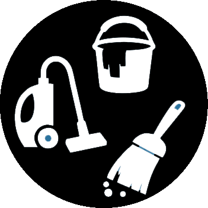

Escritório

Lavagem de pisos, limpeza interna de vidros, remoção de pó, limpeza de desinfecção de sanitários, aspiração de carpetes, tapetes e etc...
Limpeza Extra
Apartamentos e residências desocupados ou pós mudança.
Limpeza Fina (Pós Obra)
